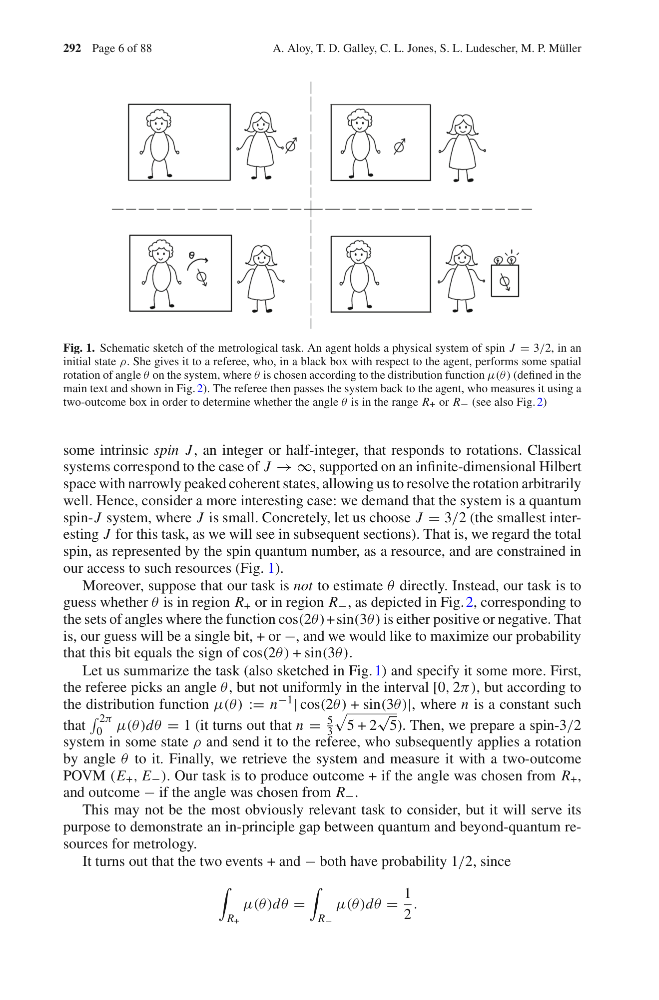

Robust certification of high-dimensional quantum devices — Paper Curation
Research Timeline
양자 행렬 계산(Quantum Matrix Computation) 분야는 2024년부터 2026년에 걸쳐 준장치독립(Semi-Device-Independent, SDI) 패러다임을 중심으로 급속히 재편되고 있다. 초기 연구의 흐름은 준비-측정(Prepare-and-Measure, P&M) 프레임워크의 이론적 정교화에서 출발하였으며, NPA 계층(NPA hierarchy)과 반정정치 프로그래밍(semidefinite programming) 기법을 활용한 다중 체인 네트워크의 상관관계 분석이 이 시기의 핵심 성과였다. 2024년에는 두 가지 중요한 전환점이 동시에 나타났는데, 하나는 레겟-가그 부등식(Leggett-Garg inequality) 위반을 활용한 단일 시스템 기반 인증 난수 생성(certified randomness generation) 실험으로, 얽힘 자원 없이 3865 bits/s의 속도로 919,118개의 인증 비트를 생성하는 데 성공함으로써 SDI 패러다임의 실용 가능성을 처음으로 입증하였다. 같은 해 회전 박스(rotation box) 형식론이 제안되어 스핀 3/2 이상의 계에서는 표준 양자 이론이 최대 일반 회전 상관관계를 허용하지 않음을 증명함으로써, 탈-양자(post-quantum) 상관 이론의 새로운 지평을 열었다. 2025년에는 이질적 양자 네트워크(heterogeneous quantum network)의 실증 구현이 이루어져 이론 연구가 현실 배치 단계로 진입하는 패러다임 전환이 가시화되었고, 경로 부호화 광자 GHZ 상태를 이용한 3~4 광자계에서 고차원 다체 비국소성(high-dimensional multipartite non-locality)이 최초로 실험적으로 관측되었다. 또한 이 시기에 약값 양자 키 분배(weak-value QKD)가 약값 측정 근사(WMA) 없이는 실질적 보안 이점을 제공하지 못한다는 공식 증명이 발표되어 해당 세부 분야가 표준 QKD 보안 분석으로 흡수되는 쇠퇴 과정이 시작되었다. 2026년에는 KCBS 맥락성(KCBS contextuality)에 기반한 양자 난수 생성기(QRNG)가 실리콘 광자 칩(silicon photonic chip) 위에 최초로 집적화되었으며, 연속 변수 호모다인(heterodyne) 검출 방식을 채택한 QRNG가 일반 공격에 대한 유한 크기 보안(finite-size security)을 갖추면서 1.165 Mbps의 상업적 수준 속도를 달성하였다. 현재 이 분야는 P&M 프레임워크가 통합 운용 기반을 제공하고, 맥락성과 측정 비호환성(measurement incompatibility) 이론이 인증 메커니즘을 공급하며, 궤도 각운동량(OAM)·시간빈 얽힘·GHZ 상태 기반 광자 플랫폼이 실험적 토대를 형성하는 삼각 구도로 수렴하고 있다. 향후 연구는 다중 사용자 이질적 양자 네트워크 환경에서 고차원 장치 인증과 SDI 보안이 상호 진화하는 방향으로 전개될 것으로 전망된다.
Research Insights 7 findings
Category Overview
Quantum Matrix Computation 카테고리는 양자 시스템의 고차원 특성과 양자 상관관계(quantum correlations)를 검증하고 활용하는 18개의 연구를 다룬다. 이 분야는 준비-측정 시나리오(prepare-and-measure scenarios)에서 양자 특성을 특징화하고, 반장치 독립적(semi-device-independent) 방법을 통해 양자난수생성(quantum random number generation)과 양자 암호화(quantum cryptography)의 보안성을 확보하는 데 중점을 둔다[023, 028, 041, 051]. 특히 양자 상관관계의 검증, 문맥성(contextuality) 기반 통신 프로토콜, 그리고 다자간 비국소성(multi-partite non-locality) 관찰을 통해 양자 장치의 견고성(robustness)을 입증한다[029, 037, 049]. 양자 피셔 정보(quantum Fisher information) 추정, 양자 상태 처리(quantum state processing), 그리고 회전 박스(rotation boxes)와 같은 고급 계산 도구들은 양자 통신 채널의 정보 용량(information capacity)을 최적화한다[039, 047, 052, 057]. 이러한 연구들은 고차원 양자 시스템의 근본적 특성을 이해하면서 동시에 현실적인 양자 기술 응용으로의 다리 역할을 수행한다.
⚠ 갭: 실제 네트워크 환경의 채널 손실, 탐지기 불완전성, 다자간 시나리오를 동시에 고려한 통합적 보안 분석 프레임워크가 부재하다.
🏛 정책: SDI 양자 프로토콜의 실용화를 위한 표준화 로드맵 수립과 포토닉 집적 소자 개발에 대한 선제적 국가 R&D 투자가 필요하다.
Robust certification of high-dimensional quantum devices

Fig. 1. Conceptual sketch of the communication protocol. The implemented setup decomposes the POVM into a set of weighte
 *Fig. 1. Conceptual sketch of the communication protocol. The implemented setup decomposes the POVM into a set of weighte* 단일 광자의 궤도각운동량(OAM)을 이용하여 고차원 양자 시스템에서 사전공유 자원 없이 두 원격 당사자 간의 양자성을 robust하게 인증하는 prepare-and-measure 프로토콜을 제안하고 실험적으로 구현했다.
이 논문은 prepare-and-measure 시나리오에서 고차원 양자 시스템의 양자성을 robust하게 인증하는 실용적 프로토콜을 최초로 실험 구현하였으며, OAM 기반 단일 광자 시스템과 rank-stability 분석을 통해 noise 환경에서의 적용 가능성을 입증함으로써 차원-효율적인 양자 통신 기술 개발에 중요한 기여를 한다.
Characterizing the set of quantum correlations in prepare-and-measure quantum chain-shaped networks
Prepare-and-measure 양자 다중 체인 네트워크에서 양자 상관관계를 특성화하기 위해 NPA-hierarchy를 적응시켜 순차 측정 연산자와 비직교 양자 상태의 내적 정보를 기반으로 한 선형 및 반정치 제약 조건들을 도입했다.
이 논문은 순차 측정을 포함하는 복잡한 양자 네트워크 구조에 대해 NPA-hierarchy를 창의적으로 적응시킨 것으로, 양자 무작위성 인증과 양자 정보 보안에 실질적인 응용성을 제공한다. 전체 확률 분포 활용의 이점을 정량적으로 입증한 점에서 이론적 기여가 있으나, 실험적 검증과 더 일반화된 확장이 필요하다.
Contextuality-based quantum key distribution with deterministic single-photon sources

Fig. 1.
 *Fig. 1.* InAs(Ga)As 양자점 기반 고순도 단일광자 원을 이용하여 양자 문맥성(quantum contextuality)을 생성하고, 이를 통해 반장치 독립적(semi-device-independent) 양자키 배포 프로토콜을 자유공간 채널에서 구현했다.
본 논문은 양자점 단일광자 원의 고유한 특성을 양자 문맥성과 결합하여 반장치 독립 QKD의 새로운 실현 경로를 개척한 중요한 기여이며, 이론적 우월성을 실험적으로 명확히 입증했다. 실제 양자 네트워크 배포에 한 걸음 더 가까워진 의미 있는 진전이다.
Enhanced quantum violation of a non-contextual inequality and witnessing quantum dimension
Sequential 측정 시나리오에서 non-contextual inequality의 양자 위반을 차원 가정 없이 유도하고, degeneracy-breaking (DB) 측정을 통해 위반을 증강시켜 양자 차원 증명에 활용할 수 있음을 보임.
본 논문은 비맥락성 부등식의 양자 위반을 차원 독립적으로 분석하고 degeneracy-breaking 측정을 통한 체계적 증강 방법을 제시하여, 양자 차원 인증의 새로운 경로를 개척했다. 이론적 엄밀성과 혁신성이 높으나 실험적 구현 및 홀수 차원 확장에 대한 논의 강화가 필요하다.
Estimation of Quantum Fisher Information via Stein's Identity in Variational Quantum Algorithms

Figure 1: Hardware-efficient ansatz with two layers, using RY rotations and CNOT gates.
 *Figure 2: Energy error as a function of iteration steps for different optimization methods—SPSA,* Stein의 항등식을 기반으로 한 Quantum Fisher Information Matrix (QFIM) 추정 방법을 제안하여, 기존 O(d²) 복잡도를 상수 복잡도로 감소시키면서 SPSA 대비 양자 자원을 절감할 수 있음을 보임.
Stein's identity를 기반으로 한 QFIM 추정 방법은 양자 최적화의 확장성 문제를 해결하는 창의적이고 이론적으로 견고한 접근법을 제시하며, SPSA 대비 자원 효율성 향상으로 NISQ 장치 기반 응용에 실질적 기여 가능성이 높음.
Fully heterogeneous prepare-and-measure quantum network for the next stage of quantum internet
완전히 이질적인 양자 네트워크를 제안하여 다양한 사용자 시스템과 양자 작업을 지원하는 준비-측정 양자 네트워크의 실제 구현을 입증했다.
이 논문은 완전히 이질적인 양자 네트워크를 통해 미래 양자 인터넷의 개방성과 확장성 문제를 직접적으로 해결하며, 5-노드 구현을 통해 다중 프로토콜, 다중 DoF, 다중 작업 지원의 실행 가능성을 최초로 입증한 중요한 기여이다.
Generalized measurement incompatibility
Quantum measurements의 부분적 결합 가능성(partial joint-measurability)을 일반화하여, 각 측정의 결과 부분집합만 고전 변수로 결정되는 경우를 분석하고, 이를 통해 device-independent 양자 암호 프로토콜의 보안 한계를 도출한다.
본 논문은 quantum measurement incompatibility의 개념을 postselection을 고려하여 의미 있게 일반화하고, SDP 기반의 판정 방법과 detection efficiency 임계값의 해석적 도출을 통해 device-independent QKD의 보안 분석에 직접적인 기여를 제공한다. 이론적 엄밀성과 실용적 중요성이 모두 높은 우수한 연구이다.
Imprecise quantum steering inequalities in tripartite systems
양자 steering에서 신뢰할 수 있는 측정 장치의 부정확성이 bipartite 및 tripartite 시스템에서 steering 부등식 검증에 미치는 영향을 분석한다.
본 논문은 양자 steering의 실험적 구현에서 흔히 무시되어 온 측정 부정확성의 영향을 체계적으로 분석하여 고차원 양자 시스템의 신뢰성 있는 steering 검증을 위한 중요한 이론적 틀을 제공한다. 특히 차원 의존적 오류 증폭 현상과 다중 당사자 시스템에서의 악화 효과는 향후 실험 설계에 직접적인 영향을 미칠 것으로 예상된다.
Information capacity of quantum communication under natural physical assumptions

Figure 1: Prepare-and-measure scenario. Different SDI as-
 *Figure 1: Prepare-and-measure scenario. Different SDI as-* 양자 준비-측정 시나리오에서 다양한 물리적 제약 조건 하에서 양자 통신의 정보 용량을 분석하고, 최적 상태 판별 확률에 대한 일반적이고 타이트한 경계를 도출한다.
본 논문은 semi-device-independent 양자 정보 처리의 다양한 물리적 가정들을 정보-이론적 관점에서 통일적으로 분석하고, 각 제약 하의 최적 상태 판별 확률에 대한 일반적 경계를 제시함으로써 양자 통신 이론의 기초를 단단히 한다.
Observation of Genuine High-dimensional Multi-partite Non-locality in Entangled Photon States

Fig. 1 | Three-dimensional three-particle GHZ state by Path Identity. Following
 *Fig. 1 | Three-dimensional three-particle GHZ state by Path Identity. Following* 경로 자유도(path degree of freedom)를 이용하여 3-4개 광자의 고차원 다중입자 GHZ 상태를 생성하고, Bell 부등식 위반을 통해 고차원 다중입자 비국소성(non-locality)을 처음으로 실험적으로 관찰했다.
이 논문은 고차원 다중입자 양자 비국소성의 첫 실험적 관찰을 이루었으며, path identity 기법과 차원 특화 Bell 부등식이라는 창의적 접근으로 높은 과학적 가치를 가진다. 다만 기술적 확장성과 실용적 노이즈 저항성 개선이 후속 과제로 남아있다.
On-chip semi-device-independent quantum random number generator exploiting contextuality
실리콘 포토닉 칩 기반의 반신뢰 양자 난수 생성기를 구현하며, KCBS 맥락성 부등식 위반을 통해 양자적 난수를 인증하고 21.7 bits/s의 생성률을 달성했다.
본 논문은 맥락성 기반 반신뢰 QRNG를 실리콘 포토닉 칩에 처음 성공적으로 구현하여, 완전장치독립 방식의 높은 요구 조건을 완화하면서도 난수의 양자적 본질을 검증 가능하게 하였다. 통합 광자 네트워크에 호환 가능한 범용 반신뢰 QRNG로의 명확한 길을 제시하는 중요한 기여이다.
Quantum correlations in prepare-and-measure scenarios and their semi-device-independent applications
Prepare-and-measure 시나리오에서 양자 상관관계를 특성화하고, 반도체-독립적(semi-device-independent) 양자정보처리 응용을 통합적으로 소개하는 포괄적 리뷰.
이 논문은 prepare-and-measure 상관관계의 양자 우위 조건을 체계적으로 분석하고, semi-device-independent 양자정보처리의 실용적 가능성을 종합적으로 제시하는 중요한 리뷰이다. 기초적 개념부터 응용까지 일관성 있게 전개되어 관련 분야 연구자들에게 귀중한 참고자료이다.
Quantum state processing through controllable synthetic temporal photonic lattices

Fig. 1 | Illustration of entangled state preparation and quantum interference
 *Fig. 1 | Illustration of entangled state preparation and quantum interference* Temporal photonic lattice 기반 coupled fiber-loop 시스템에서 time-bin-entangled photon pair의 discrete-time quantum walk를 구현하여 양자 상태 처리를 수행한다. 동적으로 제어 가능한 coupler를 통해 post-selection 없이 2-level과 4-level 양자 간섭을 달성한다.
본 논문은 temporal synthetic dimension을 활용한 양자 정보 처리의 실증적 돌파구를 제시하며, 동적 제어 가능한 fiber loop 기반 플랫폼으로 scalability와 robustness를 동시에 확보한 점에서 높은 실용성과 학술적 가치가 있다.
Security in a prepare-and-measure quantum key distribution protocol when the receiver uses weak values to guess the sender's bits
Weak value 형식을 양자 열쇠 배포(QKD) 프로토콜에 적용할 때, weak measurement approximation (WMA)를 제거하면 실제로는 보안 성능 향상이 없다는 것을 보여준다.
본 논문은 weak value 형식의 물리적 의미에 대한 중요한 의문을 제기하며, WMA 제거시 예상되는 보안 이점이 실제로는 나타나지 않는다는 결과를 엄밀하게 증명한다. 양자 정보 처리 기술의 신뢰성을 위해 이론적 근간을 재검토하는 가치 있는 연구이다.
Semi-Device-Independent Quantum Random Number Generator Resistant to General Attacks
Semi-device-independent QRNG가 일반 공격(correlated measurement strategies)에 저항하면서 유한 크기 효과를 고려하는 프로토콜을 제시하며, heterodyne detection을 이용해 연속변수 시스템에서 1.165 Mbps의 생성률을 달성한다.
본 논문은 semi-DI QRNG의 보안성을 일반 공격(correlated measurement strategy)과 유한 크기 효과 관점에서 최초로 엄밀하게 분석하며, heterodyne detection 기반의 실용적 구현으로 높은 생성률(1.165 Mbps)을 달성한 중요한 기여이다.
Single-System-Based Generation of Certified Randomness Using Leggett-Garg Inequality
Leggett-Garg inequality 위반을 이용한 단일 광자 기반의 반-기기-독립적 양자 난수 생성 방식을 이론적으로 제안하고 실험적으로 입증했으며, 초당 3865비트의 속도로 919,118개의 진정한 난수 비트를 안전하게 생성했다.
양자 난수 생성의 새로운 패러다임을 제시하며, loophole-free 실험과 엄밀한 이론적 증명으로 신뢰성을 확보했다. 단일 시스템 기반의 반-기기-독립적 접근으로 실용성을 크게 향상시켰으나, 생성 속도 개선과 더 넓은 시스템으로의 확장이 향후 과제이다.
Spin-Bounded Correlations: Rotation Boxes Within and Beyond Quantum Theory

 *Fig. 3. Boxes, rotation boxes, and the different ways to think about their physical realization. See the main* 이 논문은 공간 회전 대칭성에 대한 탐지기 클릭 확률의 응답을 분석하는 'rotation boxes' 프레임워크를 제시하며, 양자 이론이 스핀 0, 1/2, 1에서는 가장 일반적인 회전 상관관계를 허용하지만 스핀 3/2 이상에서는 양자 이론을 초과하는 자원이 존재함을 증명한다.
이 논문은 스페이스타임 대칭성이 확률 이론의 구조를 제약하는 방식을 엄밀하게 분석하는 창의적인 접근을 제시하며, 양자 이론의 특수성을 새로운 관점에서 조명하고 반고전 장치 독립 응용으로의 연결을 시도한 의미 있는 기초 연구이다.
Swapped Entanglement in High-Dimensional Quantum Systems
본 논문은 entanglement swapping 프로토콜을 고차원 양자 시스템인 qudit으로 확장하고, I-concurrence와 negativity를 이용하여 swapped entanglement를 정량화한다. 고차원 시스템이 qubit 기반 프로토콜 대비 향상된 entanglement 분배 능력을 제공함을 보여준다.
본 논문은 entanglement swapping을 qudit 시스템으로 일반화하고 여러 entanglement measure를 통해 고차원 시스템의 우월성을 정량적으로 입증하는 의미 있는 이론적 기여를 한다. 다만 실험적 검증과 현실적 노이즈 환경에 대한 더욱 포괄적인 분석이 추가되면 실용성이 크게 향상될 수 있다.